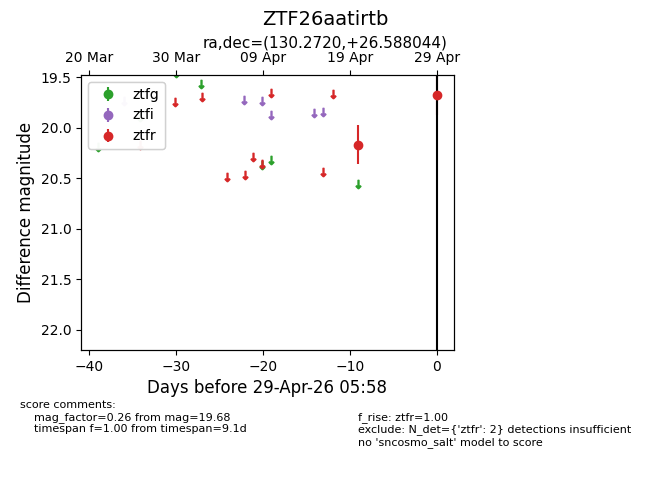
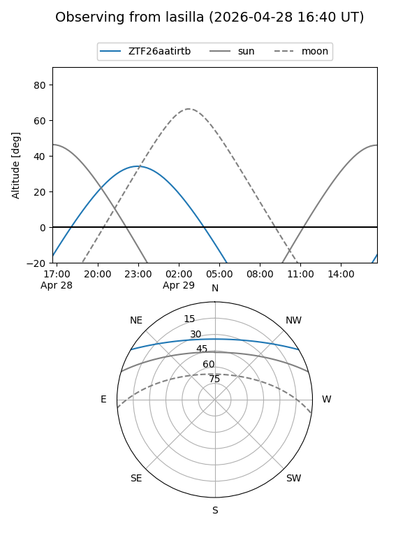
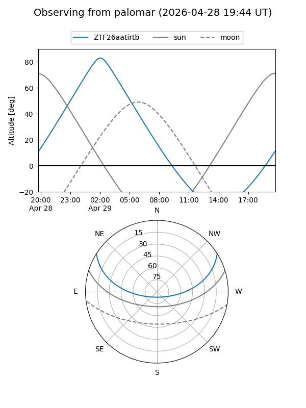

ZTF26aatirtb
Target ZTF26aatirtb at 2026-04-29 06:01
Aliases and brokers:
FINK: link
Lasair: link
ALeRCE: link
alt names
ZTF26aatirtb (ztf,fink_ztf)
Coordinates:
equatorial (ra, dec) = 130.2720,+26.58804
equatorial (HMS+DMS) = 08:41:05.28,+26:35:16.96
galactic (l, b) = (198.0738,+34.78505)
Flags:
Photometry:
last ztfr=19.68
2 ztfr detections
Lightcurve

Visibility


Additional plots